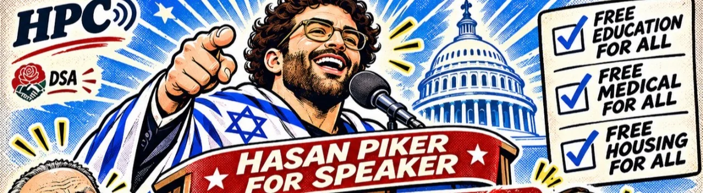

#HasanForSpeaker
Have you tried changing the Speaker?

Ask your representative to nominate or vote for Hasan Piker. Put healthcare, education and housing for every state on the House agenda.
Call your House member
House switchboard · (202) 224-3121
Ask for your representative. The link opens your dialer.
Read the story / facts
The U.S. House elects its Speaker. This campaign asks House members to nominate or vote for Hasan Piker. Only House members cast votes in that election.